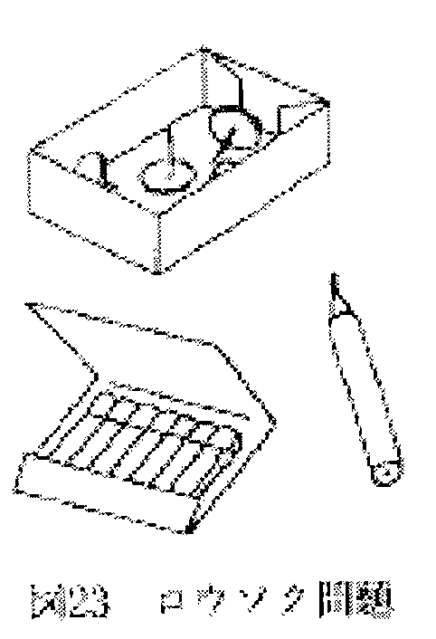

（1）
法律
小さい子どもが食事をするとき、食器はプラスティック製のものを使うのが一般的だと思いますが、私は長男が一歳半のころ、飲み物をあえて（注1）ガラスのコップに入れて与えてみました。すると案の定（注2）床に落としてコップを割ってしまいました。しかし何度か同じことを繰り返しているうちに静かにコップを置くようになりました。
私はできるだけ早い時期から子どもに物事の判断基準を教えることが親の役割だと思っていますから、言葉で理解できない小さい子どもであっても、自分で経験したり考えたりする機会を多く与えることによって、判断する力を身につけさせようとしたのです。
次第に言葉を理解できるようになると、何かを教えようとするとき必ず理由を説明しながら教えるようにしました。初めはそれで納得していたのでしょうがやがて子どもは私の言ったことに反論してくるようになりました。しかしそれは子どもの成長の一つであり私にはとてもうれしいことでした。
（中略）
私の三人の子どもたちも成長し長男は大学に一年間通った後現在は学校を休学しカリフォルニアでカンボジア難民（注3）を相手にボランティア（注4）活動をしています。我が家では私の父も私自身もボランティア活動を経験しており、子どもにも小さいときから大学生になったらボランティアさせるつもりでいました。今彼の行っている活動は私の考えていた以上に厳しいものですが彼はその中で学校などでは学べない様様な貴重な経験をし、みちがえる（注5）ほど成長しました。どちらかというと自分のことしか考えていなかったような人間が他人のことを第一に考えるようになり、自分が奉仕する（注6）ことによって何人もの人が助かったことがうれしいと言います。また、これまでの自分がいかに豊かで恵まれていたかを改めて感じていることでしょう。最近もらった手紙を読むとボランティア活動を始めたときとはまるで他人が書いているかのような内容で驚きました。
日本でも昔からボランティアが行われていましたが、まだまだ経験が少なく、習慣になっていないのが実情（注7）です。もう少し時間がかかるかもしれませんが、これからはボランティアの精神を学校や親が子どもに教えるとともにさらに活動の機会を与えることが必要だと思います。
（ケント ギルバート「私と教育 わたしとしつけ」『文部時報』1999年1月号 ぎょうせいによる）
（注2）案の定：心配していたとおり
（注3）難民：戦争などで国外に逃げ困難な生活をしている人々
（注4）ボランティア：お金をもらわずに社会や他人のために活動すること
（注5）みちがえる：変化が大きくてすぐに同じ人だとわからない
（注6）奉仕する：利益を求めずに社会や他人のために働く
（注7）実情：実際の状況
（1）次の文章はある講演の記録である。
部屋があってテーブルの上にロウソクがあります（図23）。ほかにはマッチがあります。そして画鋲（注1）が箱の中にいくつか入っています。部屋の中に壁がある。問題はこのテーブルの上にある道具を使ってロウソクを地面に垂直になるように壁に立てるというものです。要するにロウソクで部屋をともしたいんです。壁にロウソクを付けて部屋が明るくなるようにしたい。どうすればいいでしょうかという問題です。けっこうむずかしいですよね。（少し時間をとって考えてもらう。）

答えなんですが、まず箱から画鋲を出してしまう。この箱を画鋲を使って壁に止める。そうすると水平の台になります。そこにロウをたらして（注2）ロウソクを立てる。これが正解（注3）です。私はすごく感心したんです。自分では思いつかなかったのでなるほどなと思いました。もっとおもしろい実験結果は、もともとこの箱に画鋲を入れずに、外に出してバラバラにして（注4）おいて被験者（注5）に出題した（注6）ほうが早く解決されるということです。画鋲が箱の中に入っているとなかなか解決ができないというんです。それはなぜだと思いますか。私たちは画鋲が箱の中に入っていると「箱というのは画鋲の入れ物なんだ」というふうに考えますよね。入れ物としての機能を持っていると考えるとそれを台にするというアイデアはなかなか思い浮かばないんじゃないでしょうか。入れ物としてではなく、単に一つ箱がポンと（注7）置いてあると、これを台にするという考えが浮かびやすい。
（ア）という私たちがもともともっている知識、つまり固定観念がかえって問題解決を妨げてしまうんです。箱というのは入れ物にもなるけれども台としても使えるというようなことに思い至らない。そういう例として出されている実験です。
（市川伸一「心理学から学習をみなおす」岩波高校生セミナーによる）
（注2）たらす：少しずつ下に落とす
（注3）正解：正しい答え
（注4）バラバラにする：一つにまとめないで別々に分ける
（注5）被験者：実験を受ける人
（注6）出題する：問題を出す
（注7）ポンと：軽く投げて置いたようす
（2）たとえばメニューに次の二通りがあったとする。
A コーヒー380円 紅茶380円 ミルク380円
B コーヒー380円 紅茶400円 ミルク420円
どちらのメニューがすぐれた値段設定（注1）かおわかりだろうか。
答えはBである。
Aのメニューでは値段に差がないので、どれにも平均的に注文がくるかもしれない。しかし、現実にどの商品も同じぐらいの注文に応じるには仕入れ（注2）や準備に手間がかかる。ムダをはぶくには、主力商品を決め、それを集中的に売る方が効率がいい（注3）。
つまり、Bのメニューでは意識的にミルクの値段を高く設定することで「おとり商品」としているのである。ミルクの注文は少なくなるだろうが、そのかわり、コーヒーは割安に感じ、注文が集中することになる。儲かっている喫茶店ではたいていこんな方法でおとり商品をうまく利用している。
（知的生活追跡班編「数字のウソにダマされない本」青春出版社による）
（注2）仕入れ：店で売るための商品や材料を買うこと
（注3）効率がいい：労力や時間から見て利益が大きい
（3）加藤さん
秋も深まってまいりましたが、お元気でお過ごしのことと思います。そちらでの生活にはもう慣れましたか。
さて、先月の25日に今年のクラス会（注1）が無事に開かれました。高校を卒業してからちょうど10年目のクラス会ということで、私たちが教えていただいた花田先生とクラスの卒業生32名が出席しました。毎年幹事（注2）として出席していた加藤さんが欠席だったことが残念でしたが楽しい時間を過ごしました。
ところで、来年も10月ごろクラス会を開くことになりましたが、今後は卒業した高校周辺で行うのではなく、いろいろな所に場所を移してしまおうということになりました。来年の候補地は京都になり、京都で大学の講師をしている佐々木君とあちらの大学を卒業した私なら京都にくわしいからと言われ幹事を引き受けることになりました。佐々木君とも話し合い、より楽しいクラス会にしようと張り切っています。
長い間幹事をしてきた加藤さんからもぜひよいお知恵をお借りしたいので、これからはたびたび相談にのってもらえればと思います。今後はメール（注3）でご連絡しますのでよろしくお願いします。ではまた。
中村 ゆう子
（注2）幹事：パーティーなどの準備、連絡を中心になってする人
（注3）メール：コンピューターを使って送ったり受け取ったりする手紙。電子メール。Eメール
（1）我が家では「バカ」という言葉を使ってはいけないという禁止令を出しました。何気なく（注1）口に出していた言葉ついつい（注2）使ってしまいます。ある時「バ」まで言ってから気がついて子供はその後「…ビブベボ」私は「バ…バン バン バン」と続けてごまかしました（注3）。怒っていた気持ちが笑いに変わりました。
（1999年2月14日付「毎日新聞」の投書による）
（注2）ついつい：うっかり
（注3）ごまかす：失敗を別のことで目立たなくする
（2）ぼくはこどもの頃からたいへんひとみしりをする質（注1）で、ひと前に出るよりはひとりきりで（注2）いた方がいい。学校の教室などでも、ハイハイと手を上げて、われ先に（注3）自分の意見を言える子たちを見ても、ぼくにはとてもあんなふうには真似できない。だから、自分のことを、なかなか他人に伝えたり、分かってもらえなくて、悲しい思いや傷ついたりすることも多く、ああ、なんて、ぼくはそんな性格に生まれついたんだろう、と我が身が腹立たしく、くやしく思ったことも一度ならずあった。
（大林宣彦「きみが そこにいる」PHP研究所による）
（注2）ひとりきりで：ひとりだけで
（注3）われ先に：ほかの人より自分が先になって
（3）日本人は水をめぐって古くから争ってきた。日本は比較的雨が多い国なので水には不自由していないはずである。しかし、日本の川は流れが速くて利用が難しく、地下水が出るところも限られていたため、水を得るには大変な苦労が必要であった。水がないために米はもちろん、作物さえもほとんど作れない地方もあったのである。この事情は基本的には現在も変わっていない。大きな川がない市や町では、となりの市や町に金を払って水道の水を分けてもらっている。そのため住む場所によって、水道料金には大きな開きが見られる。
（4）昔、モンシロチョウ（注1）で実験してみたことがある。ケージ（注2）の地面にいろいろな色の大きな紙を敷き、チョウがどの色の紙の上をよく飛ぶかを調べたのだ。やはり緑色の紙の上をもっとも好んで飛ぶようであった。なるほど、チョウは緑色であれば紙でもいいのだなとぼくは思った。
けれどこれはチョウチョにはたいへん失礼な思いちがいであった。ほんものの草を植えた植木鉢をたくさん並べたら、チョウは緑色の紙など見向きもせず、ほんものの草の上ばかりを飛んだのである。
（日高敏隆「猫の目草―緑なら自然か。」『波』1998年6月号 新潮社による）
（注2）ケージ：鳥などを入れるかご
（5）NHK放送文化研究所では、1973年から5年ごとに、生き方、家族のあり方、政治、宗教、社会正義（注1）といったことについて日本全国の16歳以上の男女約5400名を対象に面接調査を行っている。
この調査の中に「人によって生活の目標もいろいろですが、リストのように分けるとあなたの生活目標に一番近いのはどれですか。」という質問がある。回答者は次の四つの中から答えを選ぶことになっている。
1 その日その日を自由に楽しく過ごす。
2 しっかりと計画を立てて豊かな生活を築く。
3 身近な（注2）人たちとなごやかな（注3）毎日を送る。
4 みんなと力を合わせて世の中をよくする。
下のグラフは、この質問について1973年と1993年の結果を比べたものである。ここでは、回答の1と3をまとめて「現在中心」（グラフでは●）、2と4をまとめて「未来中心」（グラフでは△）としてある。
（グラフはNHK放送文化研究所編「現代日本人の意識構造［第四版］」日本放送出版協会による）
（注2）身近な：身の回りの
（注3）なごやかな：気楽でおだやかな
（6）いつのころからか「若い人になにをのぞむか」とか「どのように生きてもらいたいか」というような質問をされるようになりました。
はじめは当惑しました（注1）。お前はもう若くないんだと不躾けに（注2）いわれたような気がして、ちょっと対応が乱れたり（注3）しましたけど、まあ、いまはそんなことをいいたいのではない。
そういう質問をされて、自分が長いあいだ、人に「どう生きて欲しい」などと願ったりすることから遠いところにいたんだなということに気がついたのです。だいたい、若い人にどう生きて欲しいなんていってみたっていうことをきく人がいるものかと、自分の若いころをかえりみて（注4）、そう思うし、多少は影響をあたえうるかもしれない自分の子どもにたいしても、ほとんどそういうことは願わずに生きてきました。
（山田太一『ふぞろいの林檎たちへ』岩波ブックレットによる）
（注2）不躾けに：相手の気持ちを考えず失礼な態度で
（注3）対応が乱れる：すぐにきちんとした答えができない
（注4）かえりみる：思い出してみる